Challenge
Citi set out to build a new mobile banking experience from the ground up. The challenge was turning an ambitious vision and many ideas into a cohesive product, identifying the features that mattered most to customers.
Making it easier for Citi customers to manage their accounts, track spending, and understand their finances through a new mobile banking experience.
Citi set out to build a new mobile banking experience from the ground up. The challenge was turning an ambitious vision and many ideas into a cohesive product, identifying the features that mattered most to customers.
I designed end-to-end UX flows, UI screens, illustrations, and iconography. I tested and refined interactions, created new UI patterns where needed, and worked closely with my design manager and engineers throughout.
The new mobile experience made it easier for customers to access more banking features and open accounts. Mobile account openings reached nearly 2,500, exceeding the initial target of 2,000 by approximately 25%.
Building Citi’s new mobile app meant turning a wide range of ideas into experiences that felt intuitive and worked together. I designed features across the customer journey, connecting flows, refining interactions, and creating illustrations and iconography that made the experience easier to use.
The first-time experience introduced customers to the app’s new capabilities and the benefits of using them. I designed the onboarding screens and created custom illustrations to make each feature easy to understand and give customers a reason to explore.
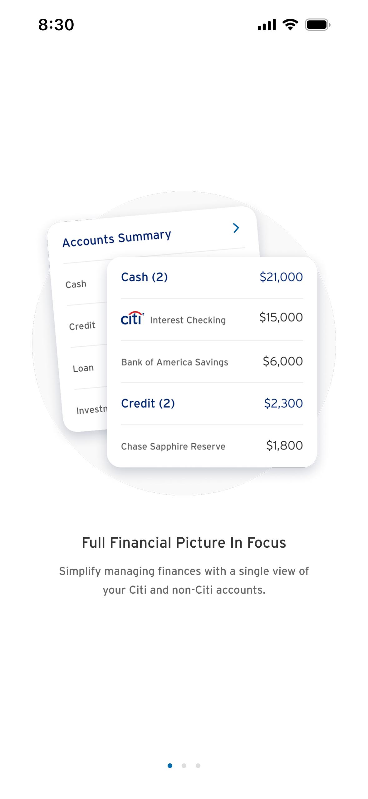
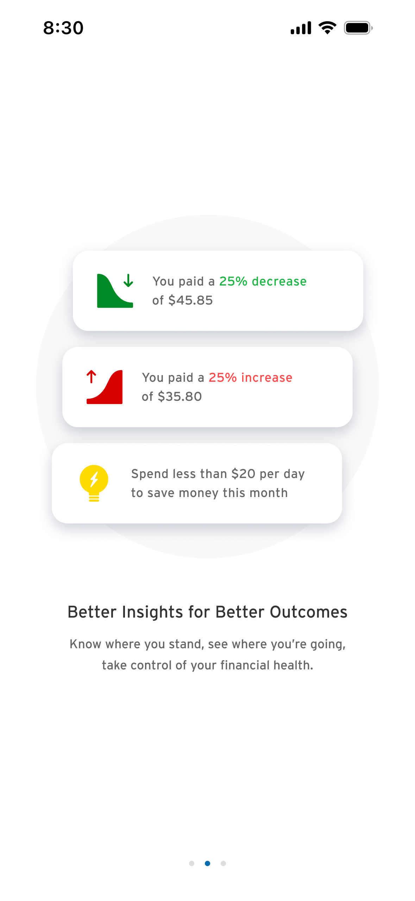
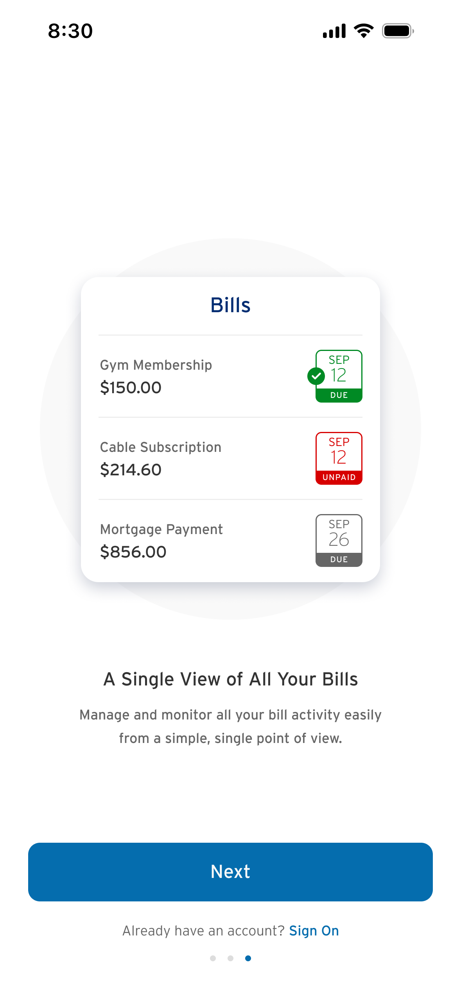
Dashboard tile design
Dashboard tiles introduced customers to capabilities such as connecting external accounts and exploring banking offers. I designed the entry points and worked with a content designer to communicate the benefits clearly, giving customers a reason to take the next step.

Monthly financial overview
The monthly overview brought financial information together to help customers better understand their spending and cash flow. I helped design and refine the screens and interactions to make financial activity easier to follow and give customers a clearer picture of their money.
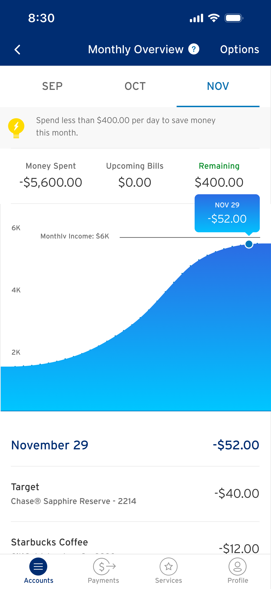
Categorization
Transaction categories needed to be recognizable even when merchant logos weren’t available. I created 24 custom icons to represent different types of spending, using a consistent visual style to make each category clear, recognizable, and easy to identify at a glance.

Beyond these features, I designed screens and interactions across account management,
transaction details, financial insights, and banking offers.
Each required attention to how customers moved through the app and how individual
experiences worked together.
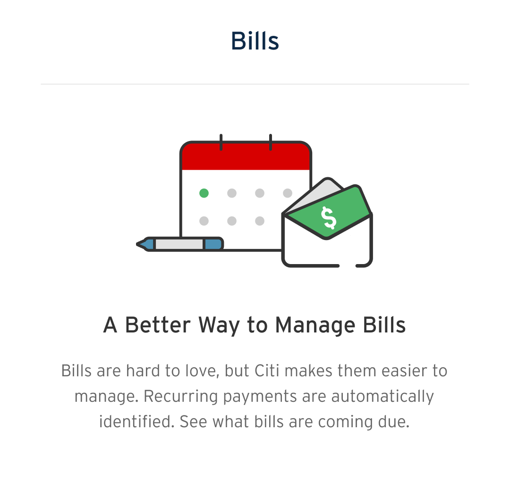
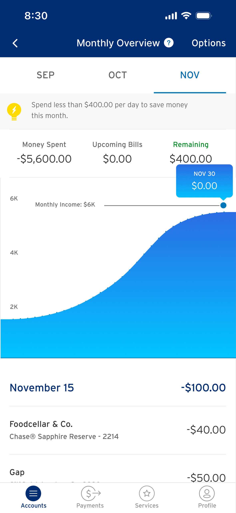
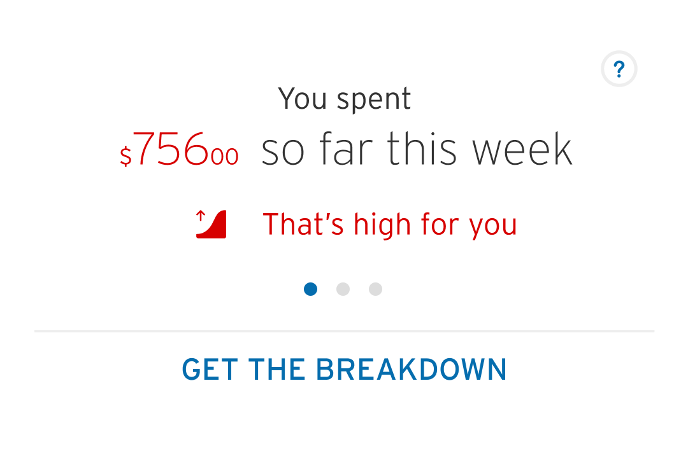
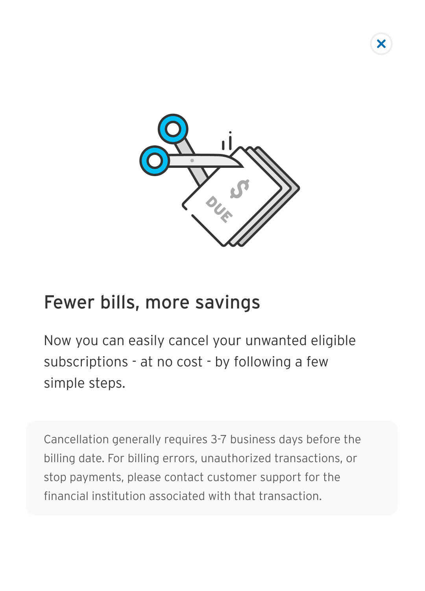

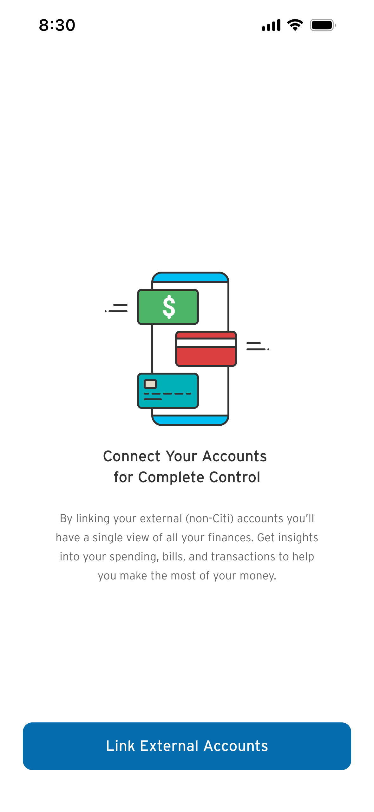

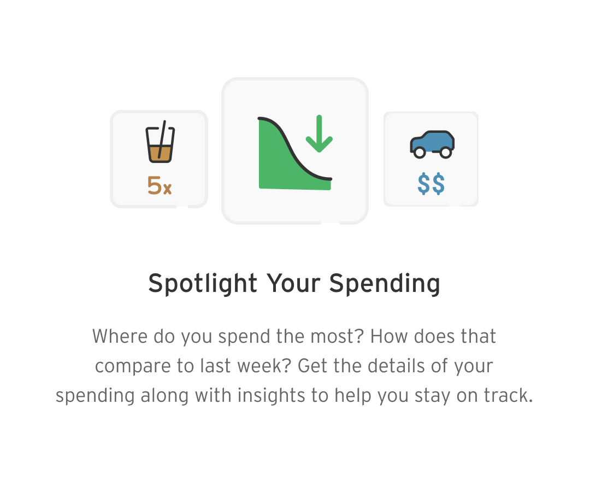
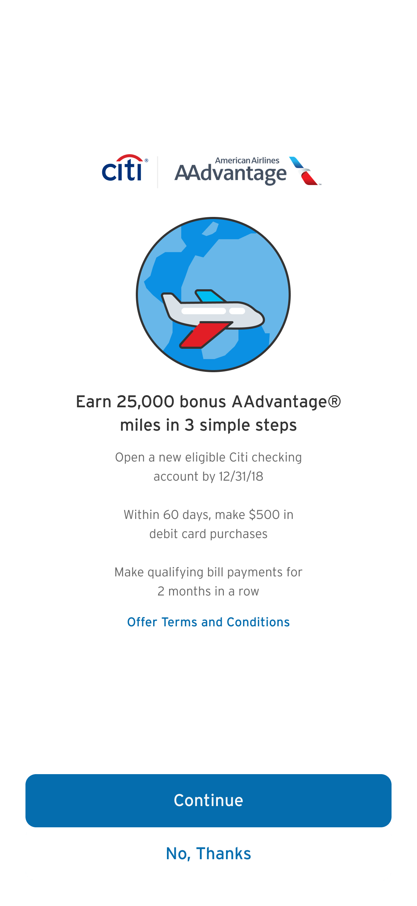
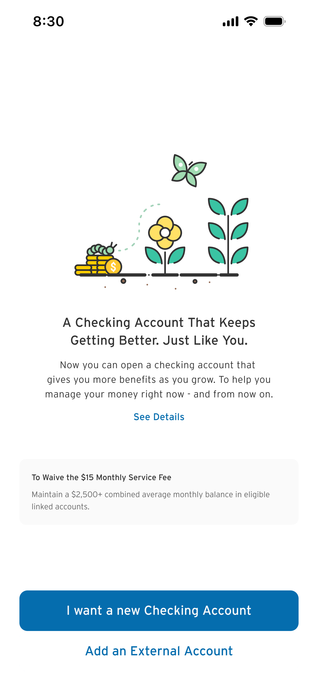
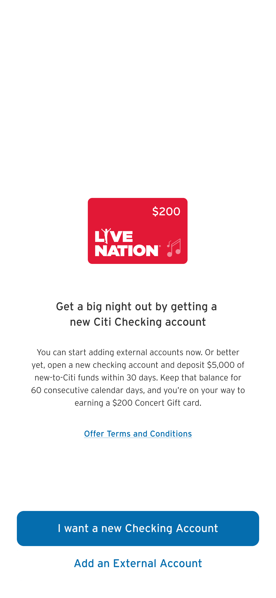
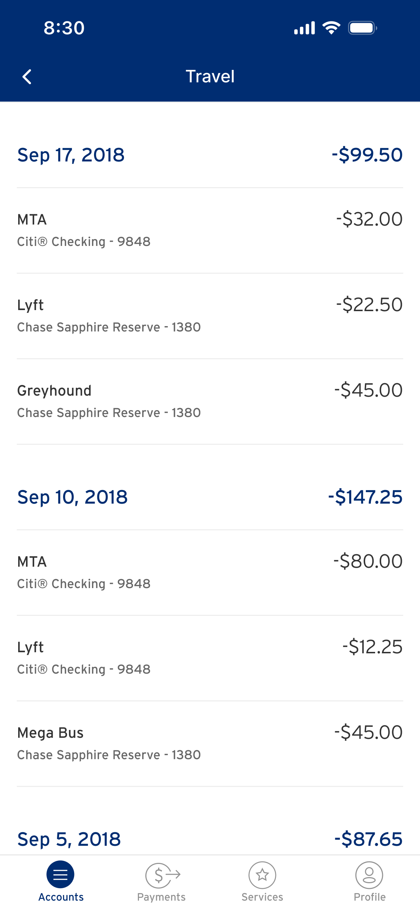

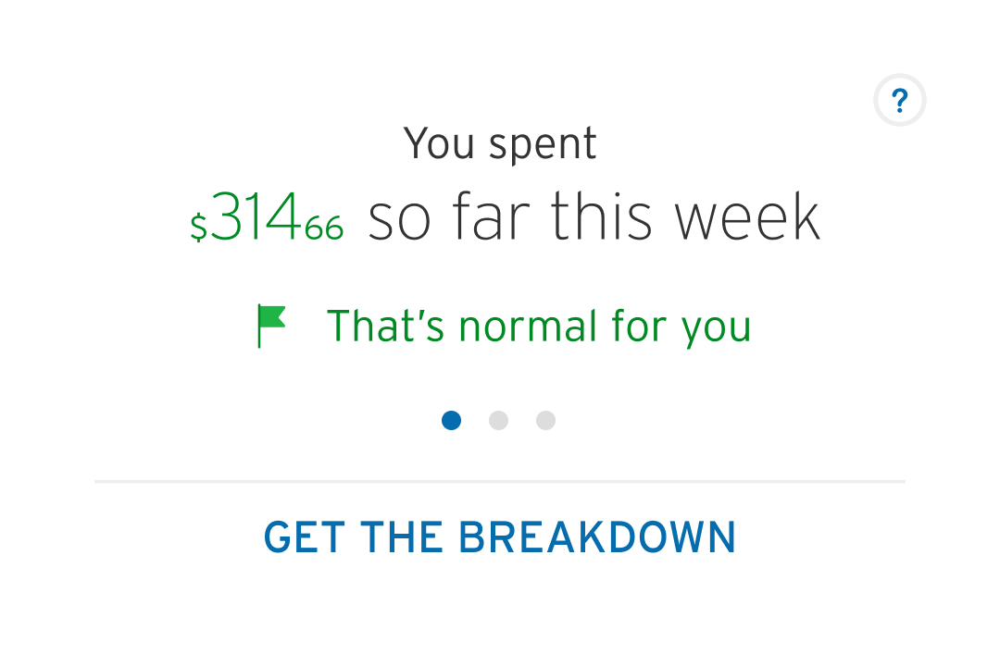